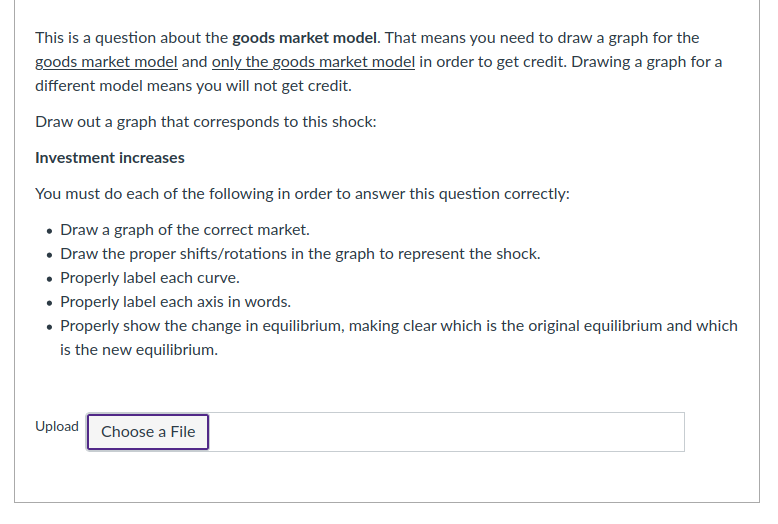
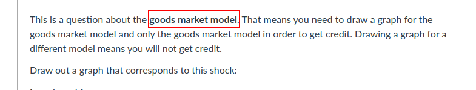
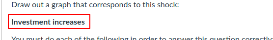
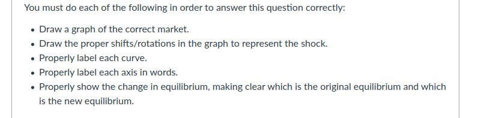
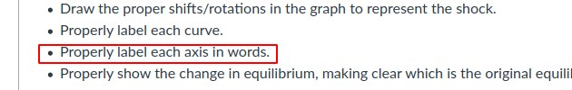
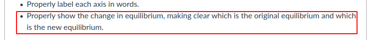
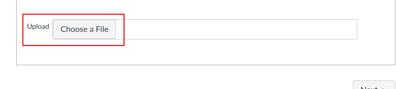

Replacement Questions: An Overview
This is a guide to answering the questions. I’ve created this guide to give you an overview of what is expected so you’re ready coming into the event.
There were eight questions requiring you to use the provided graphs to do graphical analysis on the midterm. You will replace your score on those eight questions with your score on these questions. Although the content will be the same, the format is different. Here is an example question:

The shock and model will be chosen randomly by Canvas, but the questions themselves will be similar. Some things to note:

The first thing is that I have specified the model. In this question, you need to draw a goods market model graph. If you instead draw an IS/LM model graph, you will not get points. It’s true that you can analyze this shock in the IS/LM model graph, but that’s not the subject of this question. This question is testing your understanding of the goods market model.

You need to analyze the effect of higher investment in the goods market model as we did in class.

This clarifies what you are expected to put in each graph.

Something students will do is get lazy on the labeling of axes. “ir” is not sufficient for the interest rate. I have no idea what that means. You have to write out “interest rate” if that’s what you mean. A good rule is to not use any abbreviations of terms when labeling axes.

It’s not sufficient to have the right shift. You have to make clear which is the old curve and which is the new curve. Proper use of arrows can clear up any ambiguity.

You will need write out your answer on a piece of paper, scan it as a PDF with your phone, and upload to Canvas. You want to get that workflow sorted out before you start working the questions. The OneDrive app works well. If you link it with your school OneDrive account, you can make this work between a desktop/laptop computer and your phone. Otherwise you can do the questions on your phone/tablet. A word of caution to be sure you know where your files are stored on your device. You won’t be able to upload to Canvas if you don’t know where the file with your scan is stored.